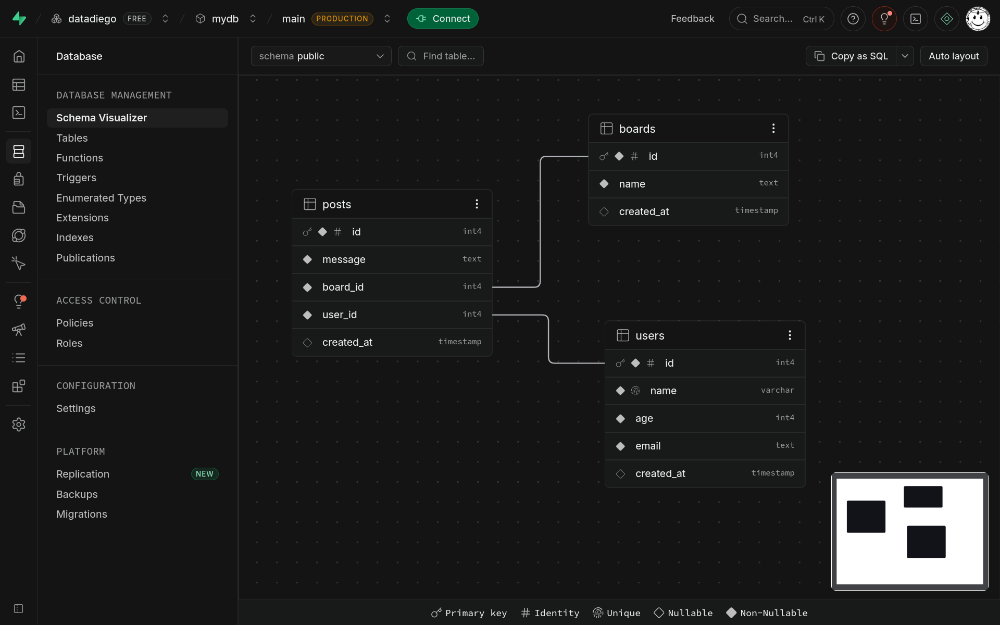
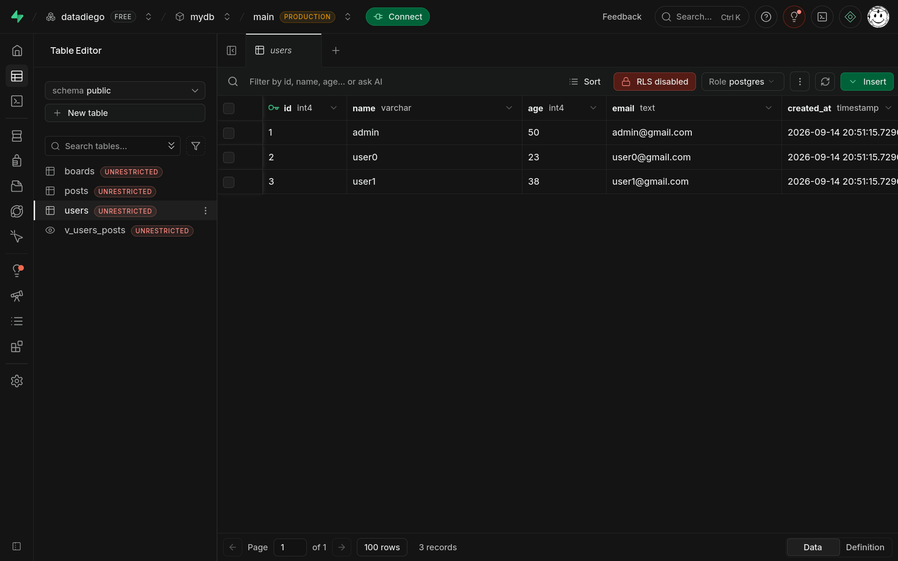

Supabase
Supabase es un servicio que te ofrece una base de datos postgresql sin necesidad de gestionar tu un servidor VPS.
Deuda técnica
Similar a turso, causa muy poca deuda técnica al estar basado en postgresql, si en algún momento necesitas migrar el proyecto a un servidor donde tu gestionas la base de datos, tendrás que adaptar muy poco código.
Creando el proyecto
- Registrate en el servicio y navega a tu dashboard
- Haz click en
New project - Añade una contraseña segura
Cuando termine te llevará al dashboard de tu base de datos.
Haciendo click en Connect en la barra superior podrás obtener tu URL de conexión, similar a:
Para conectar con pgcli pasa la URL como primer argumento sin la contraseña:
Te preguntará la contraseña y luego te dará acceso:
❯ pgcli postgresql://postgres:@db.qmeylclyeqyryqmcslln.supabase.co:5432/postgres
Password for postgres:
Using local time zone Europe/Madrid (server uses UTC)
Use `set time zone <TZ>` to override, or set `use_local_timezone = False` in the config
Server: PostgreSQL 17.6
Version: 4.6.0
Home: https://pgcli.com
postgres@db:postgres>
Estructura postgresql
Postgre es un poco diferente a sqlite y mysql en cuanto a como se estructuran las bases de datos e introduce un concepto nuevo, los schemas.
No lo confundas con los
schema.sqlque usamos para definir tablas, en postgre tiene otro significado.
Piensa en un schema como una carpeta dentro de una base de datos, dentro de esta carpeta podemos crear tablas.
servidor
└── database: mydb
├── schema: public
│ ├── usuarios
│ └── productos
│
└── schema: ventas
└── pedidos
En este ejemplo tenemos una base de datos llamada mydb, con dos schemas, public y ventas.
public contiene las tablas de usuarios y productos, mientras que ventas contiene la tabla de pedidos.
Lo interesante de los schemas es que nos permiten ajustar los permisos a diferentes grupos de tablas y agrupar tablas lógicamente.
Interando con la base de datos
Vamos a explorar nuestra base de datos, el nombre que tiene la base de datos por defecto es postgres.
Explorando los schemas
Podemos explorar que schemas hay en esta base de datos con \dn:
postgres@db:postgres> \dn
+----------------+-------------------+
| Name | Owner |
|----------------+-------------------|
| auth | supabase_admin |
| extensions | postgres |
| graphql | supabase_admin |
| graphql_public | supabase_admin |
| pgbouncer | pgbouncer |
| public | pg_database_owner |
| realtime | supabase_admin |
| storage | supabase_admin |
| vault | supabase_admin |
+----------------+-------------------+
Cada uno de estos schemas corresponde a la infraestructura de supabase y sus servicios:
| Schema | Para qué sirve |
|---|---|
public |
Tu aplicación. Normalmente aquí creas tus tablas. |
auth |
Sistema de autenticación de Supabase: usuarios, sesiones, identidades, etc. |
storage |
Tablas que utiliza Supabase Storage para gestionar archivos/buckets. |
realtime |
Infraestructura de Supabase Realtime. |
graphql |
Infraestructura interna relacionada con GraphQL. |
graphql_public |
Exposición de GraphQL para el acceso público/API. |
extensions |
Extensiones de PostgreSQL utilizadas por Supabase. |
pgbouncer |
Objetos/configuración relacionados con PgBouncer, el connection pooler. |
vault |
Secretos gestionados mediante Supabase Vault. |
Si lo comparamos con el servicio postgre que tenemos en el entorno de docker que vimos en la unidad anterior:
admin@localhost:mydb> use postgres
You are now connected to database "postgres" as user "admin"
Time: 0.021s
admin@localhost:postgres> \dn
+--------+-------------------+
| Name | Owner |
|--------+-------------------|
| public | pg_database_owner |
+--------+-------------------+
Solo tenemos un schema llamado public, donde podemos crear las tablas de nuestra aplicación.
Creando tablas
Crea este archivo schema.sql:
CREATE TABLE public.users (
id INT GENERATED ALWAYS AS IDENTITY PRIMARY KEY,
name VARCHAR(25) NOT NULL UNIQUE,
age INTEGER NOT NULL,
email TEXT NOT NULL,
created_at TIMESTAMP DEFAULT CURRENT_TIMESTAMP
);
CREATE TABLE public.boards (
id INT GENERATED ALWAYS AS IDENTITY PRIMARY KEY,
name TEXT NOT NULL,
created_at TIMESTAMP DEFAULT CURRENT_TIMESTAMP
);
CREATE TABLE public.posts (
id INT GENERATED ALWAYS AS IDENTITY PRIMARY KEY,
message TEXT NOT NULL,
board_id INT NOT NULL REFERENCES boards(id),
user_id INT NOT NULL REFERENCES users(id),
created_at TIMESTAMP DEFAULT CURRENT_TIMESTAMP
);
Fijate, ahora indicamos el
schemaen el que vamos a crear esa tabla.
Para ejecutar ese archivo, usa el comando \i ruta_a_tu_sql, por ejemplo:
postgres@db:postgres> \i ~/notas/databases/postgre/messages/schema
.sql
CREATE TABLE
CREATE TABLE
CREATE TABLE
Time: 0.228s
postgres@db:postgres> \dt public.*
+--------+--------+-------+----------+
| Schema | Name | Type | Owner |
|--------+--------+-------+----------|
| public | boards | table | postgres |
| public | posts | table | postgres |
| public | users | table | postgres |
+--------+--------+-------+----------+
Si además vas en tu dashboard a la seccion Database/Schema Visualizer, podrás tener un diagrama de entidad relación con el que controlar la estructura de tus tablas:

Puedes crear tablas desde la interfaz web, no necesitas ejecutar sentencias
CREATEdesde la terminal.
Insertando datos
Vamos a insertar datos, el único cambio con respecto a sqlite y mysql es que debemos especificar que schema usamos:
INSERT INTO public.users (name, age, email) VALUES
('admin', 50, 'admin@gmail.com'),
('user0', 23, 'user0@gmail.com'),
('user1', 38, 'user1@gmail.com');
INSERT INTO public.boards(name) VALUES
('presentaciones'),
('tech'),
('testing');
INSERT INTO public.posts (message, user_id, board_id) VALUES
('Hola, este es mi primer post!', 1, (SELECT id FROM boards WHERE name='testing')),
('Este es otro post de prueba.', 2, (SELECT id FROM boards WHERE name='testing')),
('Postgre es la hostia!', 3, (SELECT id FROM boards WHERE name='tech')),
('Yo prefiero sqlite', 1, (SELECT id FROM boards WHERE name='tech')),
('Hola mi genteeeeee', 2, (SELECT id FROM boards WHERE name='presentaciones'));
Puedes consultar los datos de las tablas, editarlos e insertar datos nuevos desde Table Editor:

Creando vistas y consultando datos
Podemos extraer datos como ya conocemos:
postgres@db:postgres> SELECT * FROM users;
+----+-------+-----+-----------------+----------------------------+
| id | name | age | email | created_at |
|----+-------+-----+-----------------+----------------------------|
| 1 | admin | 50 | admin@gmail.com | 2026-09-14 20:51:15.729066 |
| 2 | user0 | 23 | user0@gmail.com | 2026-09-14 20:51:15.729066 |
| 3 | user1 | 38 | user1@gmail.com | 2026-09-14 20:51:15.729066 |
+----+-------+-----+-----------------+----------------------------+
SELECT 3
Time: 0.061s
Y crear vistas:
CREATE VIEW public.v_users_posts AS
SELECT
users.name AS username,
posts.message,
boards.name AS board,
posts.created_at
FROM posts
JOIN boards ON posts.board_id = boards.id
JOIN users ON posts.user_id = users.id;
Las vistas aquí no aparecen en el
Schema Viewer, pero si en el editor de tablas.
Named Queries
Una de las ventajas de postgre es el uso de las named queries, imaginalas como una función que queda almacenada:
\ns insert_post INSERT INTO posts (message,
user_id, board_id)
VALUES (
'$1',
(SELECT id FROM users WHERE name = '$2'),
(SELECT id FROM boards WHERE name = '$3')
);
En este caso hemos creado una named query con el nombre insert_post, que espera un mensaje, un nombre de usuario y el nombre de un tablón, podemos ejecutarlo con:
postgres@db:postgres> \n insert_post "prueba prueba prueba" user0 testing
> INSERT INTO posts (message, user_id, board_id)
VALUES (
'$1',
(SELECT id FROM users WHERE name = '$2'),
(SELECT id FROM boards WHERE name = '$3')
)
INSERT 0 1
Time: 0.066s
Columnas JSON
Postgre tiene otra gran ventaja frente a otros motores de bases de datos, puede almacenar y extraer información de JSON en columnas.
Esto rompe bastante las reglas que hemos estudiado hasta ahora, y hay que saber cuando conviene romperlas.
Por ejemplo, nos piden un cambio simple en esta base de datos:
Los usuarios ahora pueden añadir sus redes sociales a su perfil
Podriamos modificar la tabla de usuarios y añadir una columna por cada red social que esperen poder añadirse, pero... ¿y si el dia de mañana quieren añadir otra red social que pueden poner los usuarios?
Si dejamos guardar un json en una columna llamada rrss podemos añadir cuantas redes sociales queramos, da igual si un usuario no añade ninguna, si otro pone 5, o si el dia de mañana la aplicación deja poner de otras 10 plataformas más.
Vamos a modificar la tabla de usuarios para añadir esta columna:
Y a insertar un usuario que si tenga redes sociales:
INSERT INTO public.users (name, age, email, rrss)
VALUES (
'elvira',
30,
'elvira@example.com',
'{"instagram": "https://instagram.com/elvira", "linkedin": "https://linkedin.com/in/elvira"}'
);
Consultando JSONB
Podemos extraer usuarios que tengan una determinada red social:
Y obtener su valor:
O evitando nulls: